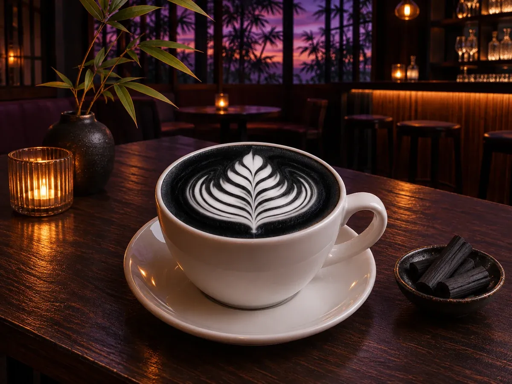

CONCEPT
栄のビルの一角の、
薄暗い隠れ家
Twilight coffee sakae は、2021年6月から栄の雑居ビルの中でひっそりと営業しているカフェです。 灯りを落とした、バーのような雰囲気の中で、ひとりでもゆっくり過ごせます。
Twilight coffee
夏には、壁一面に七夕の短冊。お客様のたくさんのお願いごとが飾られる、あたたかいお店です。
皆さんのお願いが全て叶うように祈っております。 公式Instagramより（七夕の短冊をふりかえって）
「手書きのおしぼりなど、気配りがうれしい」「一人でゆっくり過ごしたい人に向くお店」という来店者の声もありました。
